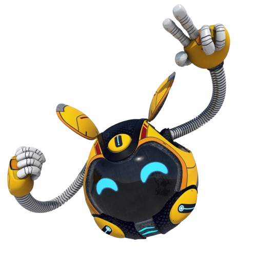
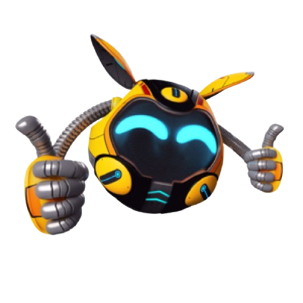
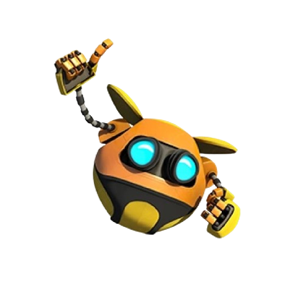
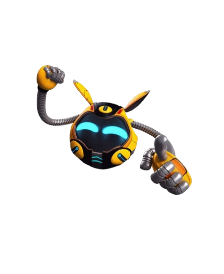
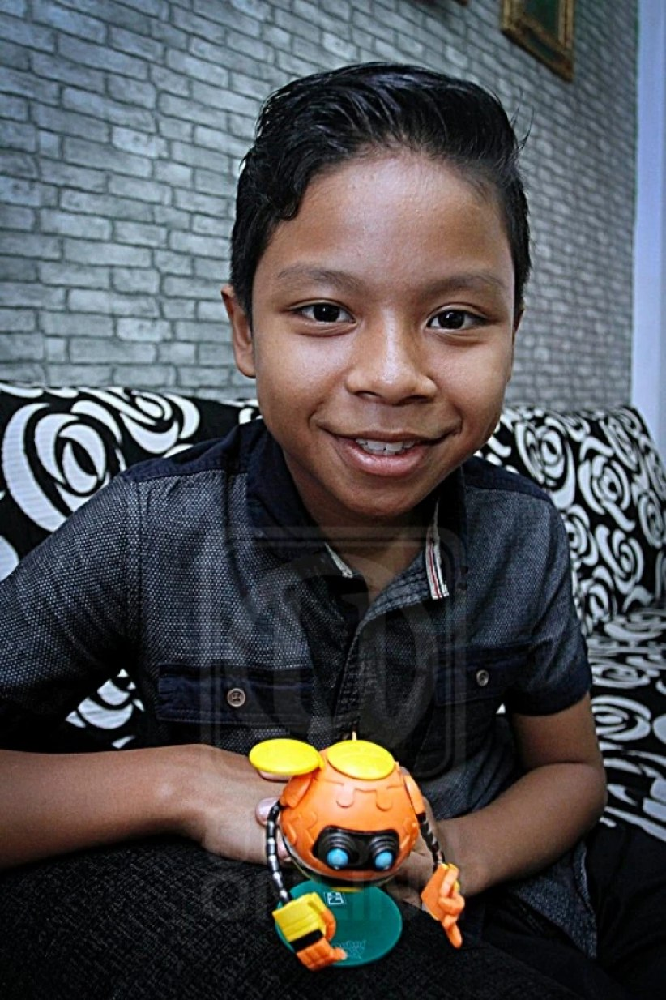

Ochobot is a small, yellow robot in BoBoiBoy who grants elemental powers to the heroes. As a loyal and brave companion, he is often hunted by villains, making him the central focus of many of the team's adventures.
MORE INFOOchobot is a small, yellow robot who serves as a vital character within the BoBoiBoy universe. As a Power Sphere, he possesses unique abilities that are central to the series' plot, often acting as the catalyst for the adventures undertaken by BoBoiBoy and his friends. He is known for his friendly, loyal, and sometimes naive personality, which makes him a cherished companion among the group.
In his role as a technological asset, Ochobot is capable of bestowing elemental powers upon humans, which is how the main characters receive their abilities. His design is characterized by his round, compact shape and his ability to communicate, often expressing a wide range of emotions despite his mechanical form. Throughout the series, he faces numerous threats from antagonists who seek to capture him and exploit his power, forcing him to rely on the protection of BoBoiBoy and his team. Ochobot's presence is not only essential for the action and world-building of the franchise but also adds a layer of heart, as he constantly demonstrates a deep sense of friendship and bravery in the face of danger.


This reflects Gopal's classic appearance from the early BoBoiBoy series, showcasing his iconic look as the group's lighthearted and food-loving comic relief.

This represents his updated BoBoiBoy Galaxy appearance, featuring a more polished, high-detail digital art style that aligns with his growth into a seasoned team member while maintaining his recognizable charm.

Muhammad Fathi Bin Diaz, atau lebih mesra dengan panggilan Ee, ialah seorang pelakon suara latar Malaysia yang memahat nama dalam industri animasi tempatan menerusi peranan ikoniknya sebagai suara asal watak Sfera Kuasa Ochobot. Beliau memegang watak tersebut bermula dari siri asal BoBoiBoy Musim 1 hingga 3 serta filem hit BoBoiBoy: The Movie, di mana keunikan vokalnya berjaya menghidupkan watak robot pembantu itu dengan penuh ceria dan berkesan.
Berasal daripada latar belakang keluarga seni suara, beliau merupakan adik kepada Nur Fathiah Diaz, iaitu pelakon suara tersohor yang menyumbangkan suara untuk watak utama BoBoiBoy. Walaupun peranan Ochobot kemudiannya digantikan oleh pelakon suara lain dalam sekuel BoBoiBoy Galaxy akibat peralihan usia dan perubahan tona suara, sumbangan awal Muhammad Fathi Diaz tetap menjadi memori terindah yang terpahat kemas dalam sejarah peminat setia animasi popular tanah air.
Ochobot is a powerful Power Sphere capable of storing data, activating teleportation portals, and accessing advanced systems. Its primary function is support and navigation, but it possesses significant defensive and utility capabilities.